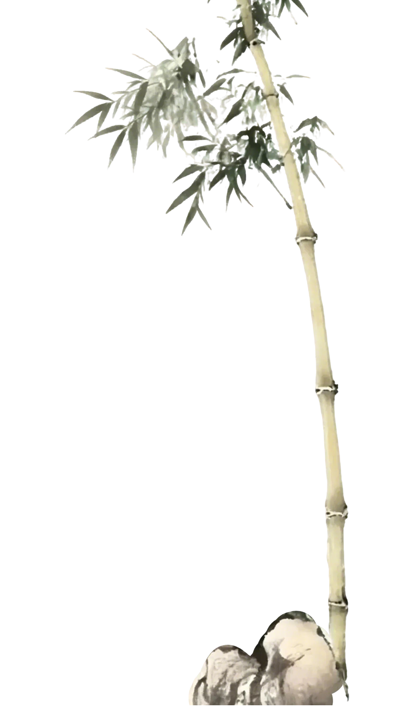
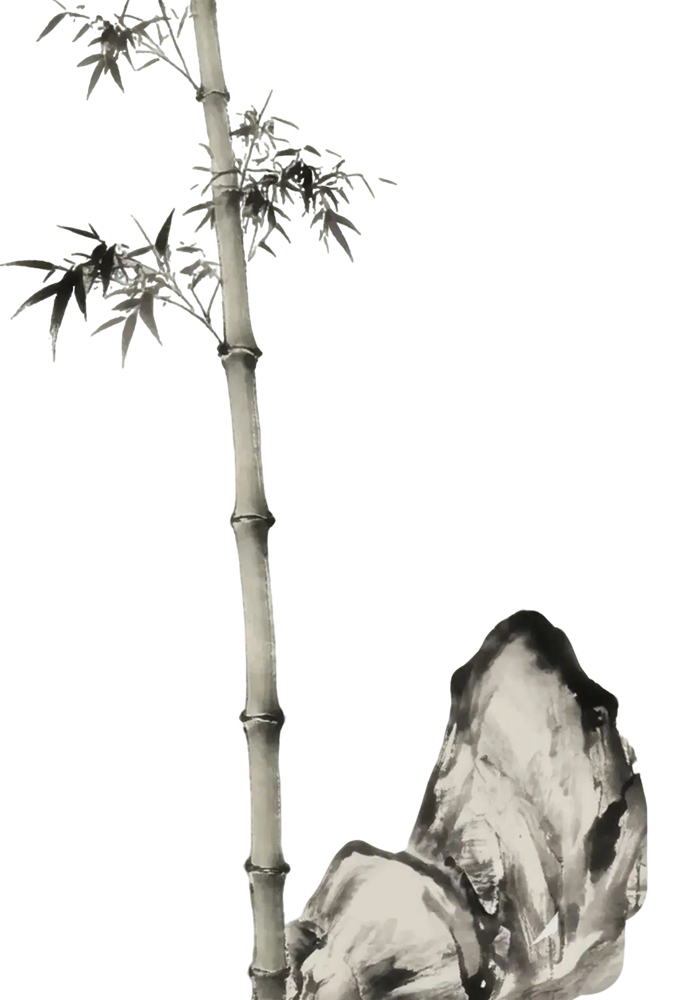
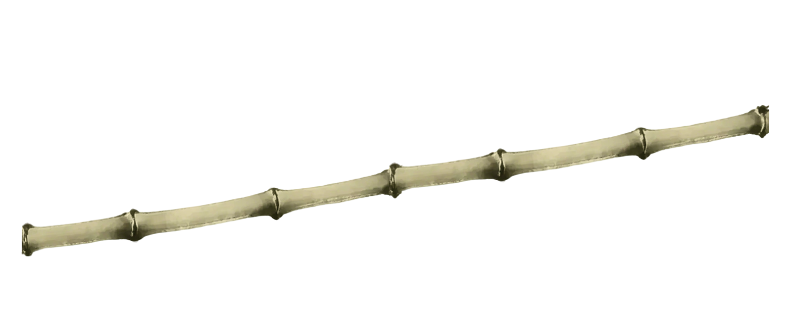
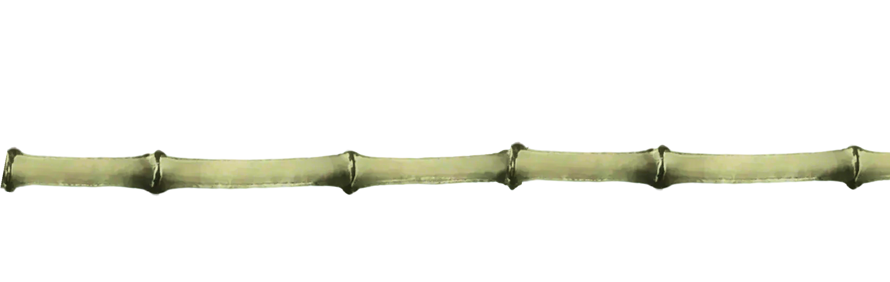

‹
›
择竹
择竹
汗青
开孔
试音
滚轮滑动 · 深入丛林
新竹砍下需要阴干2年以上
烘烤去湿可防止竹笛后期开裂

来回滑动烘烤竹管
完成烘烤后点击凿子打通内节
点击白色按钮拿起凿子
吹孔
膜孔
一孔
二孔
三孔
四孔
五孔
六孔
竹笛开孔节奏
宫
吹孔
商
膜孔
角
一孔
徵
二孔
工尺谱
笛膜为魂，采芦苇内膜，薄如蝉翼，透似轻纱
请选择膜材，贴于膜孔之上
苇
芦苇膜
音色清亮
竹
竹膜
音色温润
纸
纸膜
音色浑厚
确认贴膜

1
2
3
4
5
6
7
笛开七孔，上应七星。五声二变，清浊自辨
按键盘数字键 1-7 吹奏音阶
再次
体验
↓
汗青完成
竹管已去湿定型，内节已通